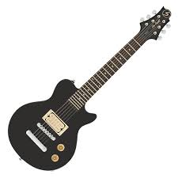
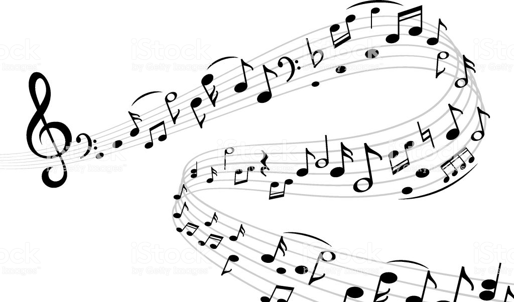

1. Rock and Roll I've always been a fan of rock and roll because I first started listening to the Beatles when I was very young. Other bands that I loved from the rock and roll genre consist of Green Day, AC/DC, Aerosmith, Boston, Coldplay, The White Stripes, Foo Fighters, etc. Although I have loved rock and roll it isn't one othe catagories I have listened to recently. 
2. Heavy Metal Another one of my earlier and more well known genres for me is definitely heavy metal. The first band that I every listened to in the heavy metal genre is Iron Maiden. I started listening to hevay metal when I was about ten. Also some more bands to help you understand what I like to listen to include: Slipknot, Five Finger Death Punch, Black Sabbath, Dio, Metallica, Ozzy Osbourne, Megadeath, Rush and etc. This would also be another genre that I haven't listened to that much recently. 
3. Rap One of my most recently listened to genres would be rap. I started listening to rap not to long ago. Some of my most litened to rappers would include: Denzel Curry, 21 Savage, Tyler the Creator, A$AP Rocky, Earl Sweatshirt, A$AP Ferg, Kendrick Lamar, etc.